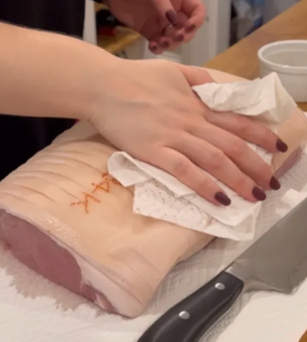
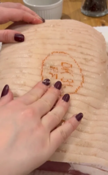
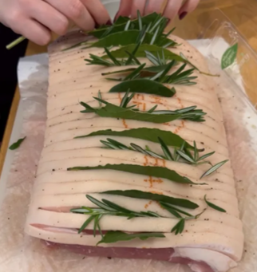
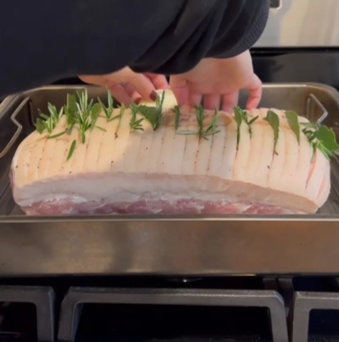
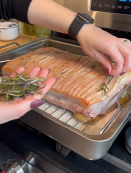
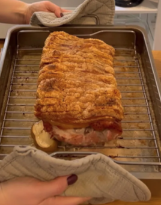

My Danish Christmas Recipe Book
A celebration of Denmark's most beloved holiday dishes – from crispy
Flæskesteg (Roast Pork) to creamy
Risalamande (Rice Pudding). These recipes have been
passed down through generations and are the heart of a traditional
Danish Julmiddagsmad (Christmas dinner), but today am ony showing
you all how to make Flæskesteg.

Brief History of Denmark's Christmas Dinner
Tradition & Modernity in one, the classic Danish
Christmas Eve meal stars roasted pork or duck with caramelized potatoes
(brunede kartofler), red cabbage, and gravy.The dessert is Risalamande
—almond rice pudding with cherry sauce—where finding a hidden
almond wins a prize, which was likely influenced by French traditions.
Roots & Evolution:
- The dish originated from the Viking Jul (winter solstice celebration).
- It eventually merged with Christmas after Denmark's Christianization in the 11th century.
- By the early 1900s the tradition had introduced a new member to the dish, Risalamande, first among the upper class. This creamy rice pudding is now a staple of the Christmas feast.
- The almond tradition may come from a French bean-in-cake custom.
- In modern times the dish features Roast pork or duck with red cabbage, caramelized potatoes and gravy on the side, with risalamande and cherry sauce as dessert.
Now unto the recipe. Do note am not showing everything only how to make Flæskesteg.
Flæskesteg (Roast Pork)
A centerpiece of the Danish Christmas dinner, this recipe makes the most delicious, juicy, and tasty slices of pork
- perfect for a traditional Danish Christmas dinner! And our favorite part - the pork crackling on top
- is crispy and crunchy, adding an amazing savory taste and texture to the dish
often served with caramelized potatoes
and red cabbage.
| Servings |
3 people (It's all up to you on how many people you're serving) |
| Prep Time |
15 minutes |
| Cook Time |
3 hours |
| Total Time |
3 hours 15 minutes |
Ingredients:
- 1.38kg (3 lbs) pork loin with the rind on
- Flaky salt
- Pepper to taste
- Fresh bay leaves (can also use dried!)
- Fresh rosemary sprigs (optional)
Instructions:
- Preheat oven to 325F (160C) - we set our oven to convection roast.
- Remove the pork loin from its packaging and pat it completely dry.

- If you have a cut of pork loin that has the rind attached and is pre-sliced,
rub flaky salt in between the slices of rind. If you have a cut that is not pre-sliced,
slice the rind into about 1 cm thick pieces; make sure you are cutting down through the fat layer below, but NOT through the meat.

- Season with salt and pepper all over.
- Stuff bay leaves and rosemary sprigs (optional) between the rind.

- Place in a roasting dish that has an elevated rack; add 2 cups of water to the dish (if you don't have an elevated rack, don't add the water!).
- Before roasting, make sure the pork loin is sitting evenly on the dish. If one end is lower, add slices of potato until the top of the pork loin is level.
This will help make sure the rind cooks evenly.

- Roast for about one hour, then remove the bay leaves and the rosemary sprigs so they don't burn. You can optionally baste the pork loin at this point.

- Roast for about an hour to an hour and a half or longer (for a 6lb roast, this will be a total of 2-2.5 hours [20-25 minutes per pound];
this will vary widely depending on the size of your roast and also your oven; if you have a smaller roast, you may want to start checking the temperature far earlier,
perhaps after just thirty additional minutes!); check the temperature of the meat. It should reach at least 145F (~63C). If the internal temp has not reached 145F,
roast for 15 minutes at a time and continue to check the temperature so it doesn't get overcooked.
- The rind should be crackling at this point; if the pork loin has reached the desired internal temp and the rind still look flat and not crispy,
turn on the broiler for about 5 minutes, keeping an eye on it! It should start to puff and get very crispy!
(note - if using the broiler, just make sure you aren't burning the top! It can begin to darken very quickly!)

- Remove from the oven and let rest for at least 10 minutes before slicing. Cut into slices following the cuts on the rind. Enjoy with gravy and a side of potatoes and braised red cabbage!
Course: Main,
Cuisine: Danish,
Difficulty: Beginner.